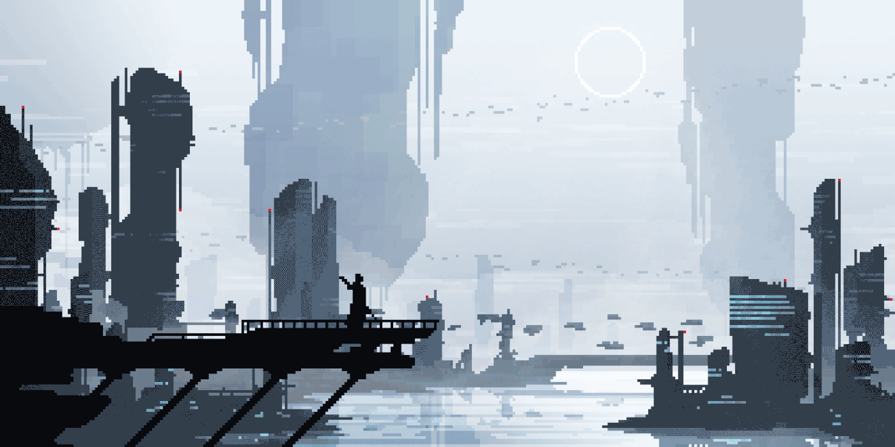
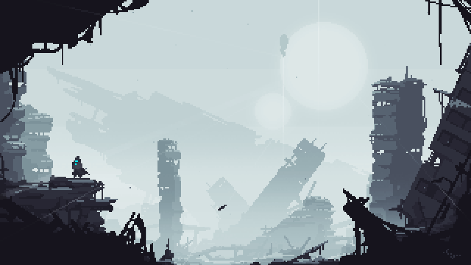

Central Archive Square
BADASS BUGS
A quiet meeting place for unfinished eras, remembered machines, personal myths and the people still walking through them.
Readable Now
Thirteenth Sun / Firstborn Sun / The Bloodletting / Post-ascension / Interlayer.
Closed Gates
Regions and empires are standing in the distance, still under scaffolding.

Town Notice
The world is still being assembled.
Dust gathers on old signs, new streets open without warning, and the archive keeps growing behind every gate.